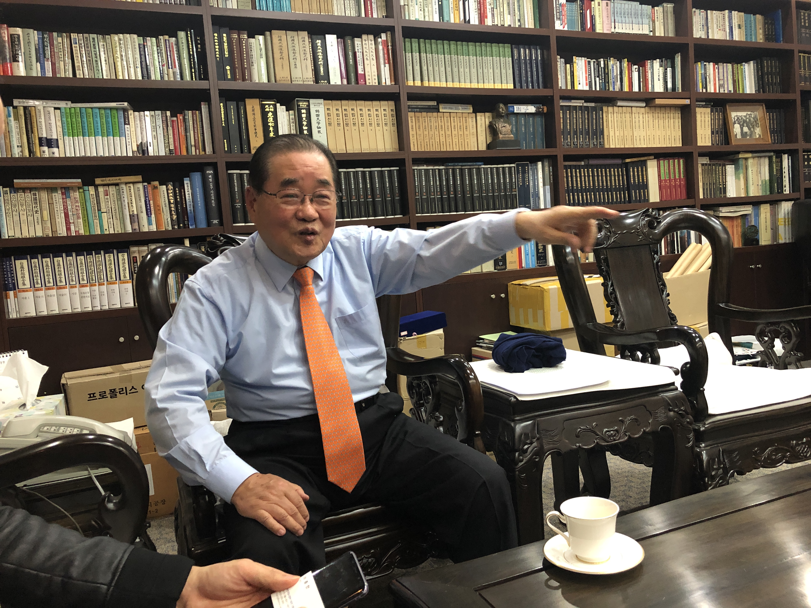
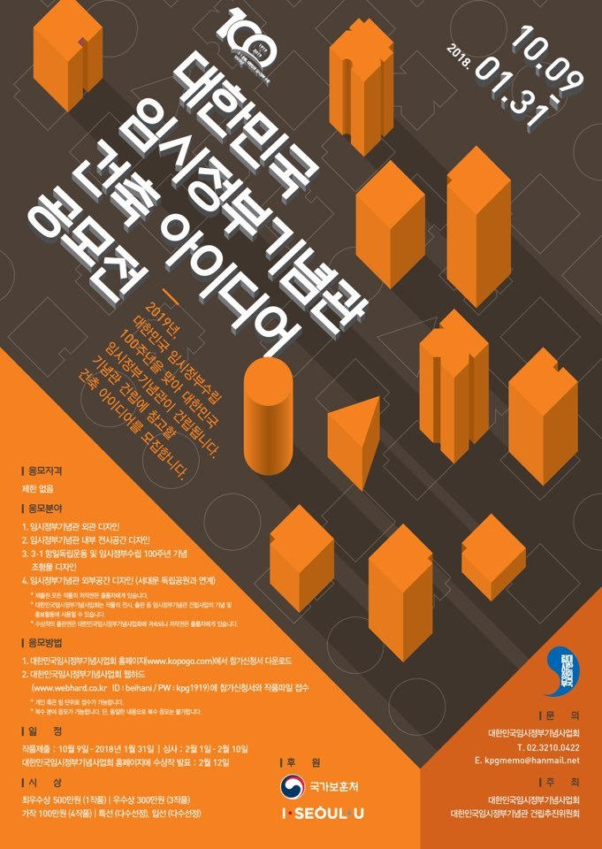
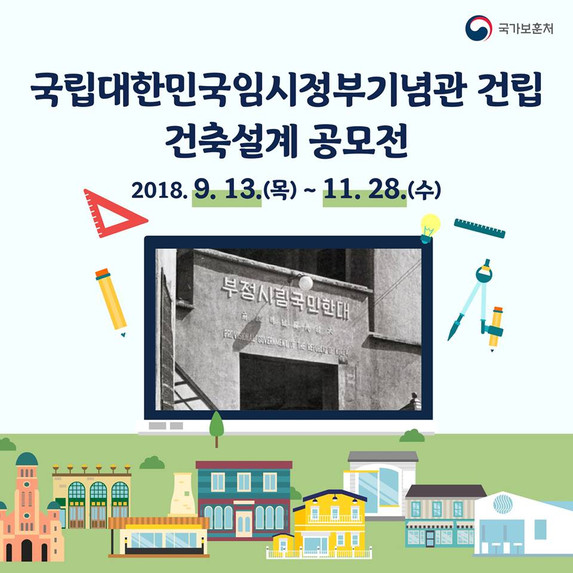
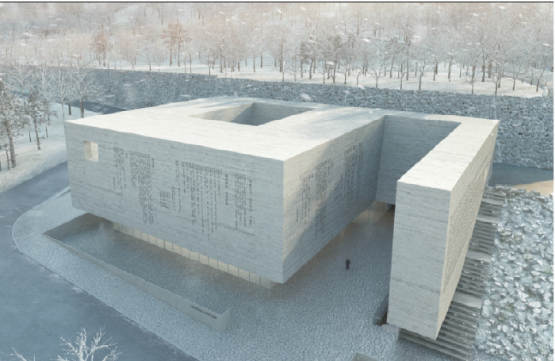
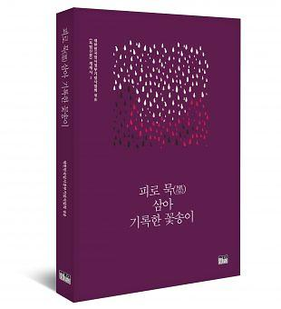
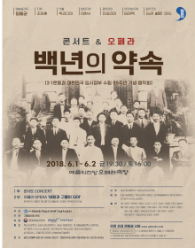

> 우당기념관 집무실에서 이종찬 회장이 임시정부 기념관의 부지 선정에 관해 언급하고 있다.
이종찬 회장의 목소리는 나이를 느낄 수 없을 만큼 힘차고 또렷했다. 11월의 마지막 날, 취재팀은 대한민국 임시정부 기념관 건립추진위원회 이종찬 회장(이하 이 회장)을 만나러 경복궁 근처의 우당기념관을 방문했다. 우당은 이 회장의 조부인 독립운동가 이회영 선생의 호로, 우당기념관은 고인의 뜻을 기리는 동시에 독립운동의 역사를 후세에 알리는 공간이다. 1990년 서울 종로구 동숭동에 세워져 2001년 현재의 위치인 서울 종로구 신교동에 자리를 잡았다.
이종찬 회장은 “ 2018년이 대한민국 연호 상으로 100년이 되는 해”라고 운을 떼었다. 1948년 이승만 대통령이 ‘대한민국 30년’이라는 연호를 썼으니, 70년이 지난 올해는 ‘대한민국 100년’이라는 것이었다. 내년인 2019년은 바로 ‘100주년’. 그는 임시정부 기념관도 이 때에 맞춰서 완공하여 개관하고 싶었다고 말했다.
2004년에 처음 시작한 일은 좀처럼 진척되지 않았다. 이승만을 지지하지 않는 임시정부 출신 원로 독립운동가 측에서는 이승만에 대한 불만으로, 이승만 지지자 측에서는 건국절 논란 등으로 갈등의 골이 깊은 상황이었다. 이 상황을 타개하기 위해 이 회장은 2015년 건립추진위원회를 맡은 뒤 서둘러 이화장(이승만의 개인 사저)을 방문하여 이승만의 양아들(이인수)에게 “딴 생각하지 말고 임정의 깃발 아래로 들어와야 한다, (이승만을) 건국 대통령 이런 식으로 이야기하지 마라”고 해서 동의를 얻었다.
이 대목에서, 이 회장는 ‘integrity(통합)’와 ‘포용’을 역설했다. “이승만 세력도 포함해야 하고, 김원봉으로 대표되는 사회주의 계열도 포함해야 한다. 독립운동의 범위를 넓게 잡는 것이 중요하다. 민족문제연구소에서는 친일인명사전을 지나치게 넓은 범위로 잡고 4300명이나 지목했는데, 그렇게 해서는 일본에 좋은 일만 하는 것이다. 그 시절에 정말 자기 양심을 팔아가면서 마음 깊이 친일을 하려던 사람은 실제로는 그렇게 많지 않았다. 독립운동 당시 임시정부에서도 처단해야 할 악질 친일 부역자 목록으로 658명만 지목했다.”
이 회장은 자치운동을 했던 사람들을 친일파로 몰아세우는 것도 지나친 처사라고 주장했다. “인도의 간디도 영국에 대해 자치운동을 했던 사람인데, 그럼 간디도 민족 반역자인가”라고 반문하면서, “넓은 범위에서 그들도 결국 일본이 이 땅에서 물러나도록 노력한 사람이기에 그들 또한 배척하지 말아야 한다”고 말했다.
이 회장은 지난 박근혜 정권 때 이병기 대통령 비서실장과 만나 임시정부 기념관 사업 추진에 동의를 받아 내기도 했다. 그 결과 10억 원의 예산을 받았으나, 보훈처에서 2천만 원만 쓰고 나머지 비용을 한 마디 상의도 없이 불용처리해버리는 황당한 경험을 하기도 했다. 정세균 당시 국회의장을 만나 사정을 하여 다시 10억 원의 예산지원을 약속받았다. 이번에는 민간 성금으로 지어야 한다는 조건이 달려 곤란한 상황이었다.
그러던 중 지난 대통령 선거 유세 때, 문재인 당시 더불어민주당 후보가 찾아와 기념관 사업 국비 지원을 공약으로 내건 이후, 모든 대선후보에게서 동의를 얻었다. 이후 별다른 반대 없이 예산 편성이 되었다.
예산이 확보된 뒤 기념관이 들어설 땅을 물색하기 위해, 박원순 서울시장을 찾아가 후보지 몇 곳을 추천받았다. 그중 위치가 좋다고 판단한 옛 서대문구 의회 터를 기념관 부지로 선정하였다.


사업은 본궤도에 들어가, 지난해 10월부터 올해 1월까지는 건축 아이디어 공모전을, 올해 9월부터 11월까지는 건축 설계 공모전을 진행했다. 총 93개 회사가 신청했고, 66개 회사가 등록하여, 16개 회사가 최종 작품을 제출했다. 국가보훈처와 건립추진위원회는 12월 5일에 작품 심사를 거쳐 6일에 최종 당선작을 발표했다. 이 회장 자신은 작품 심사에는 관여하지 않는다고 밝혔다. 당선작은 지하 2층, 지상 3층 규모이며 본격적인 공사는 내년부터다. 2019년 하반기에 착공하여 2021년 하반기에 준공할 예정이다.

> 국립대한민국임시정부기념관 설계공모 당선작 '시작되는 터, 역사를 기억하는 표석이 되다'
“사실 나는 백범기념관을 먼저 짓는 것을 오히려 고인에 대한 결례라고 생각했다. (백범기념관은 2002년 서울 용산구 효창동에 건립되었다) 백범이 살아계셨으면 절대 저런 생각 안 했을 것이다. 백범은 당신의 기념관이 아니라 임시정부의 기념관을 세우라고 말했을 것이다.”
이 회장은 “신용하 서울대 명예교수처럼 임정 시대를 안창호 시대, 김구 시대로 나누자는 의견도 있지만, 그렇게 해서는 안 된다”면서, 기념관 구성을 잘 알려진 인물들 위주로만 하는 것이 아니라 숨어 있는 인물들도 다 발굴하여 ‘모두’를 위한 공간을 마련해야 한다는 점을 강조했다.
“이승만부터 김원봉까지 다 하자고 하니까, 경북 성주에서 어떤 분이 연락이 와서 고맙다고 하면서 소장하던 자료를 기증했다. 양아버지가 사실 임시정부에 참여해서 광복군 활동도 했는데, 해방 정국에 월북하셔서 그동안 독립운동가라 차마 말하지 못하고 숨어 지냈다고 했다. 이렇게 숨어 지내는 분들이 비단 이 한 사람뿐이겠는가?”
이 회장은 프랑스에서는 파리에만 800개, 프랑스 전역에는 2000여 개의 레지스탕스 푯말이 존재한다는 사례를 들며, 이에 반해 우리나라는 독립운동 하신 분들에게 너무 소홀했던 것 같다고 말했다.
이 회장은 자료의 중요성도 역설했다. 독립운동의 흔적이 보통 일본 측의 기록에 의거한 경우가 많은 실태를 가리킨 것이다.
“사실 독립운동을 하셨던 분들은 ‘식민지’라는 용어를 쓰지 않으셨다. 우리가 미개한 나라도 아니었고, 일본보다 문화적으로 뒤지는 것도 아니었는데 왜 식민지라는 표현을 붙이는가. 일본인들이 생각하고 사용하던 용어를 우리 지식인들이 그대로 받아들이는 모습을 보고 독립운동가 분들이 안타까워했다. 나도 그래서 ‘일제시대’라는 표현을 쓰지 않고, ‘대일항쟁기’라는 표현을 쓴다.”
임시정부 수립일이 4월 13일에서 내년부터 4월 11일로 바뀌게 된 것도, 일본 측에서 4월 13일에 임시정부의 존재를 확인하여 기록한 것을 ‘그런가 보다’하고 받아들였다가 최근에서야 임시정부 측에서 제작한 초청장 등을 재발견한 덕분이었다는 에피소드를 알려주었다. “앞으로 임시정부 기념관 설립 후 커뮤니티 같은 접수처를 마련하여 숨어 있는 인물이나 자료에 대한 제보를 받고자 한다”는 말도 덧붙였다.


이 회장은 독립운동은 총칼을 들고 싸우는 것만이 아니었다고 강조하면서, 이날 인터뷰 이후 일정도 소개했다. 대한민국임시정부기념사업회가 주최하는 행사로, 독립운동가들의 미발표 시를 묶은 시집 『피로 묵 삼아 기록한 꽃송이』 북 콘서트였다. 그는 이렇게 문학과 예술도 독립운동의 일환으로 여기고 활발한 연구를 진행 중이라고 밝혔다. 올해 6월에는 예술의전당에서 중국 공산당 팔로군 행진곡을 작곡한 정율성의 오페라 삽입곡과 광복군 군가를 작곡한 한유한의 오페라 삽입곡을 섞어서 만든 창작 오페라 <백년의 약속 2부 - 바람과 구름이 되어>가 공연되기도 했다.
이 회장은 2005년부터 올해 8월까지 여천 홍범도 기념사업회 회장을 역임하였다. 이 회장은 “우리가 예전부터 무반을 경시했지만, 군사 독재 정권을 거친 후로는 더더욱 무반을 경시하는 풍조가 있다”고 말했다. 이래서는 안 되겠다는 생각에 이 회장은 우리 국군의 전통을 의병, 독립군, 광복군에서 찾자고 하는 운동을 펼치기도 했다. 그 일환으로 제대로 역사적 평가를 받지 못한 인물로 찾아낸 것이 바로 홍범도 장군이었다. 지금은 다행히 홍범도 장군 기념사업이 발전하여 홍범도 장군의 군대 운용이 어떠했는지 등이 속속 밝혀지고 있지만, 홍범도 장군 이외에도 블라디보스톡에서 활동하다가 일제의 스파이로 몰려서 억울하게 죽거나 중앙아시아로 강제이주 당한 독립운동가들의 행적인 제대로 복원되지 않고 있다.
이 회장은 절판되었던 조모 이은숙 여사의 『서간도 시종기』를 주석을 덧붙여 재출간하고, 3회에 걸쳐 낭독회를 열기도 했다. 이은숙 여사도 독립운동가로 바라보아 관련 기록이나 유품을 임시정부 기념관에 전시할 계획이 있는지 묻자, “사람들이 자칫 임시정부 기념관을 '또 하나의 우당기념관'으로 바라볼까 염려되어, 가족을 내세우고 싶지는 않다”고 몸을 낮추었다.
마지막으로 이 회장은 임시정부 기념관을 지으면서 앞으로 있을 어려움에 관해서도 짧게 얘기했다. “앞서 말했듯이 충분하지 않은 예산이 책정되었고, 추가로 (정부에서) 돈을 충분하게 더 줄 것 같지도 않다. 그래서 더더욱 국민 여러분들의 성금과 자원봉사가 큰 역할을 해 줄 것으로 기대한다. 많은 분들의 참여를 기다린다.”
이 회장은 임시정부 기념관의 기대 효과에 관해서도 언급했다. “서대문 형무소에 1년간 다녀가는 사람이 75만 명이다. 그런데 그 75만 명이 다 돌아갈 때는 우울한 마음을 품고 간다. 두들겨 맞고, 굶고, 고문당하는 것들만 봤으니 그럴 수밖에 없다. 서대문 형무소 옆에 임시정부 기념관이 생겨 관람 동선이 기념관까지 이어진다면, 그래도 관람객들이 ‘이런 정부를 세우려고 고생하셨구나’라는 생각으로 마음이 풀어지지 않을까 생각한다.”
우당기념관 내부 공간 한쪽에는 ‘우당 청소년 역사교실’ 현수막이 걸려 있었다. 중고등학교 역사 선생님들이 학생들에게 강연하는 일에 장소를 제공해 주고 있었다. 4주 동안 매주 토요일마다 이곳에서 강연하는 것을 1년에 네 차례, 4주 동안 매주 토요일마다 열리는 역사교실이 진행되어온 것이 올해로 7년째다. 기념관이라고 하여 엄숙하고 위압적인 곳인 줄 알았는데, 생각보다 조촐하고 열린 공간이었다. 이종찬 회장이 염원하는 임시정부 기념관도 이런 모습이 아닐까.
1936년 중국 상하이에서 태어나 열 살 때 광복을 맞이하였다. 독립운동가 우당 이회영 선생의 손자 중 한 분이다. 당시 상하이에서 환국하는 백범 김구 선생에게 꽃목걸이를 걸어 준 화동 역할을 하기도 했다. 한국에 온 뒤로는 경기중, 경기고, 육군사관학교, 서울대 행정대학원을 졸업하였다. 1981년부터 1996년까지 서울 종로구/중구 국회의원 활동을 하며, 87년 개헌 당시 헌법 전문에 ‘3·1운동으로 건립된 대한민국 임시정부의 법통을 계승한다’는 문구를 넣는 일에 일조했다. 김대중 정부 시절 대통령직 인수위원장, 마지막 안기부장이자 초대 국정원장을 역임하였다. 현재는 독립운동가 후손을 지원하는 우당장학회, 대한민국임시정부기념관 건립추진위원회 등의 활동에 집중하고 있다.